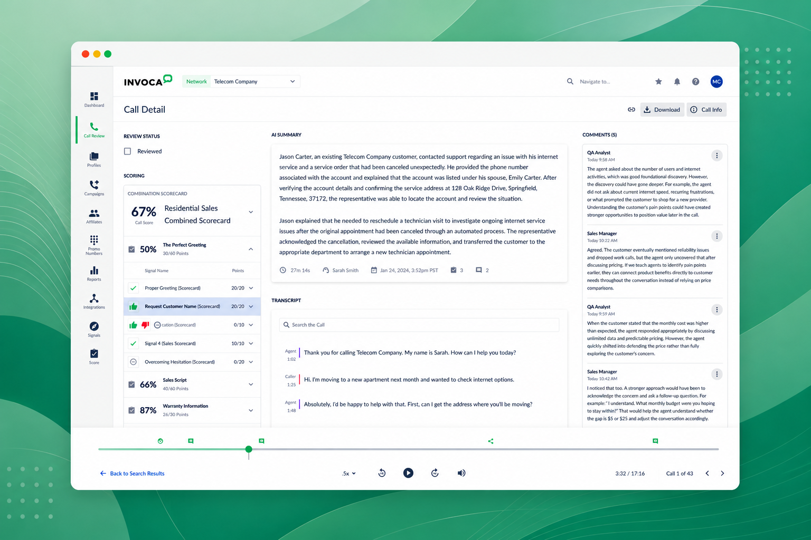
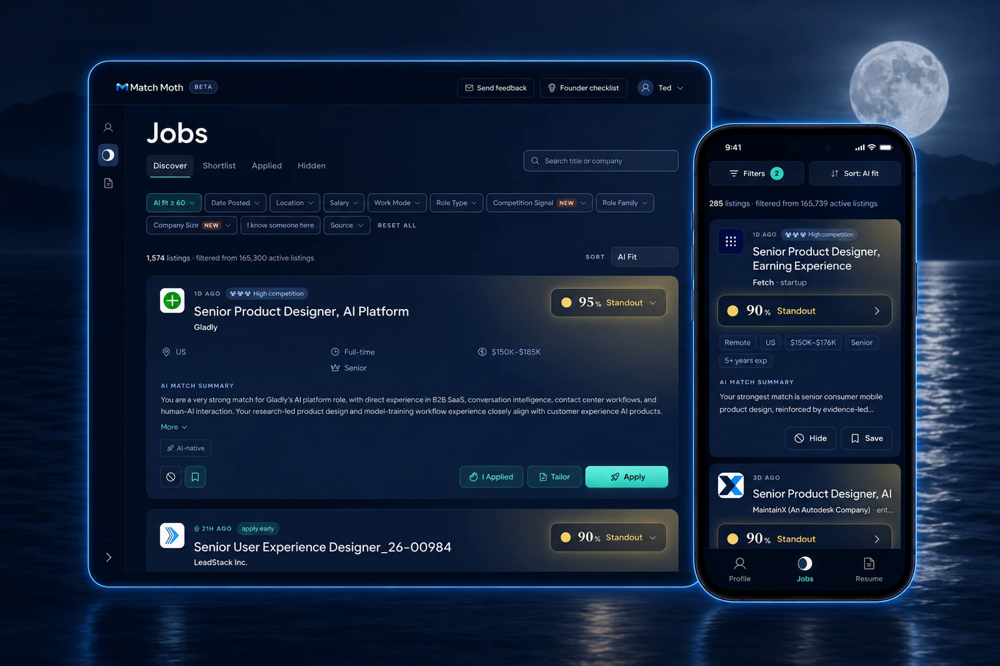
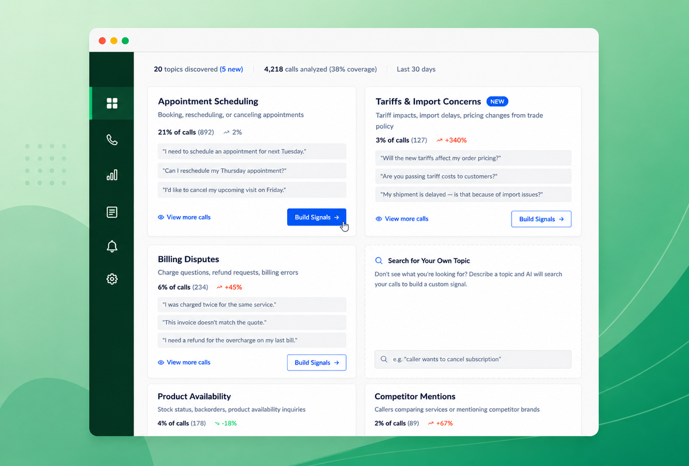
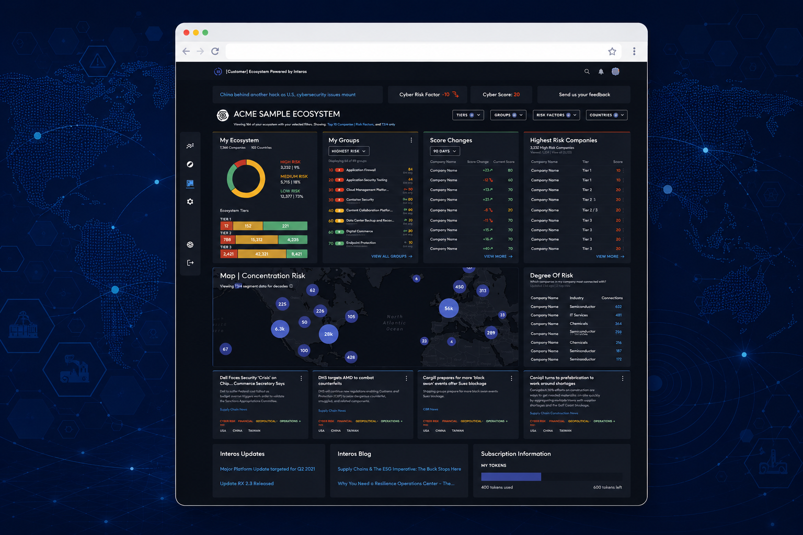
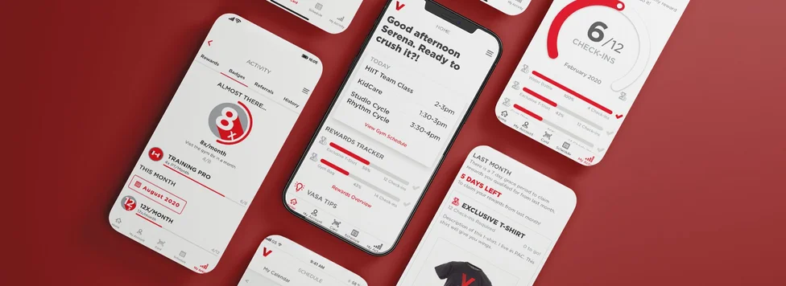

Redesigned the daily workflows contact center Sales agents and QA team rely on, helping triple the product's ARR.
AI is only as useful as the experience around it. I've designed LLM evaluation tools, model training workflows, and conversation intelligence products that help real people make sense of what AI is doing under the hood, and trust it enough to act on it.
Designing for custom models means translating high complexity into simple, intuitive experiences, making AI accessible to the people who need to use it, not just the people who built it.
I practice what I design. This site was built with Claude Code. I use Claude to write copy and generate options I can evaluate, Gemini for deep-dive research, and Figma Make to prototype fast.
I also run my work through multiple AI models to stress-test decisions: getting different perspectives the same way I'd pull in another designer for a crit. AI handles the production velocity so I can focus on making better decisions.

An AI tool that runs my job search end to end: crawls a dozen sources daily, scores every role for fit, and emails a ranked shortlist each morning.

An end-to-end concept that made custom LLM training self-service, exposing the hidden human work behind the product.

Led UX projects on the risk platform enterprises relied on as Interos scaled to a $1B+ valuation.

Unified a fragmented gym membership experience into one app: 300K installs, 4.3 stars.
I'm a builder at heart. The more interesting the problem, the more I want to pull it apart. Years of UX consulting taught me something valuable: every project has a wall, and it's never the wall you expected. Sometimes it's an interaction design challenge. Sometimes it's persuading the head of Product to advocate for a new process step.
That generalist instinct has taken me across consumer products, enterprise B2B, SaaS, and AI — including two companies that hit unicorn valuations.
Open to Senior or Staff UX design roles in enterprise, AI, or consumer. Available now.